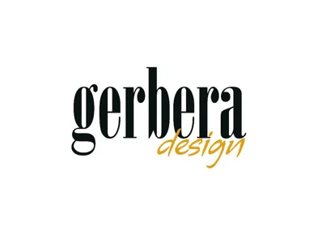
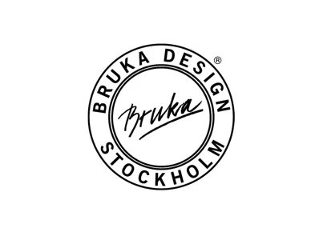
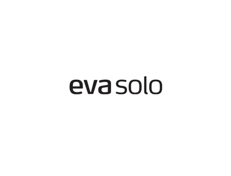
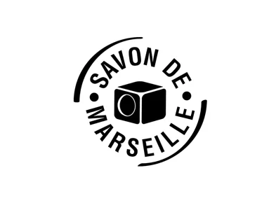
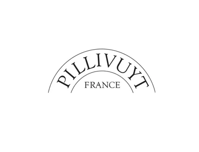
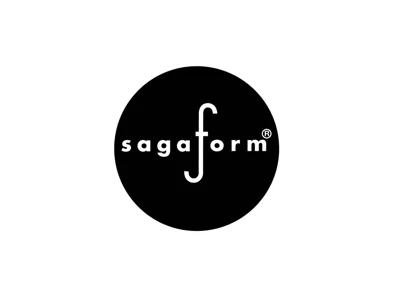
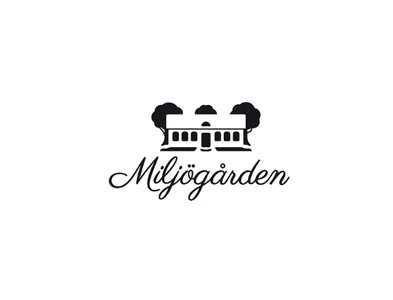

Design att leva med.
Namn att känna igen.
Från kökets arbetshästar till bordets blickfång. Här är några av varumärkena i vårt sortiment.

Dukning & glasDukning & glas
Inredning
Kök & matlagning
Textil & doftInredningSkeppshultKök & matlagning
Dukning & glas
Inredning
InredningOch ännu mer i butiken.
Du hittar också bland annat MAC, KAI, Demeyere, Staub, Scanpan, Karlskrona Lampfabrik, Star Trading, Airam, Rosenthal, Villa Collection, Different Design, Dorre och Pulltex.
Letar du efter en viss modell eller färg? Ring oss så hjälper vi dig att kontrollera vad som finns inne.
Ring butiken